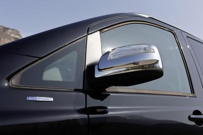
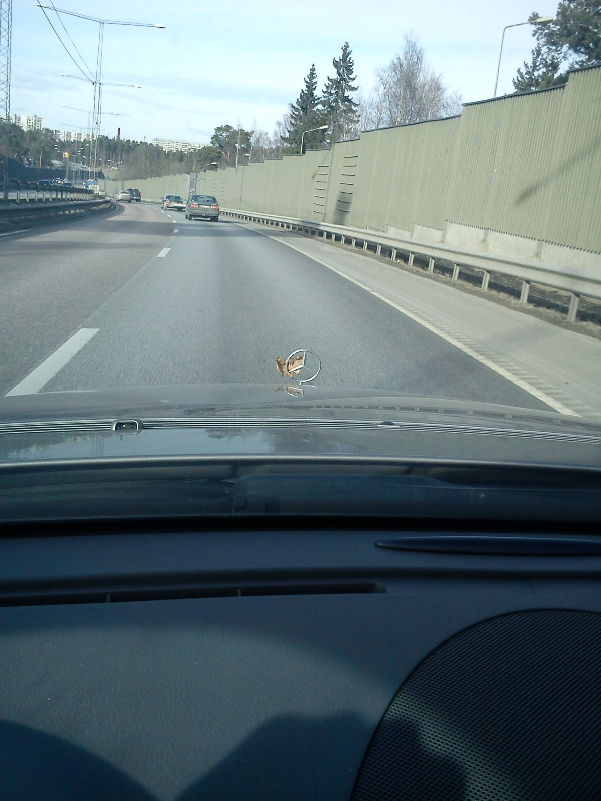
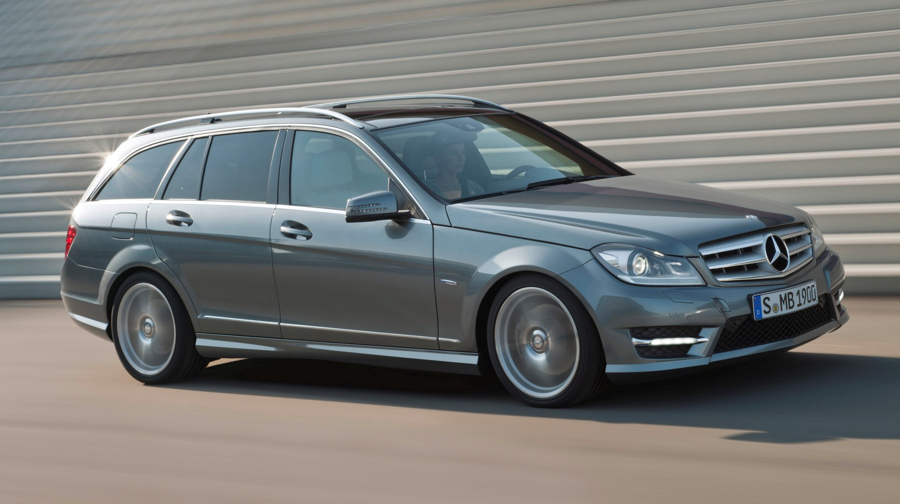
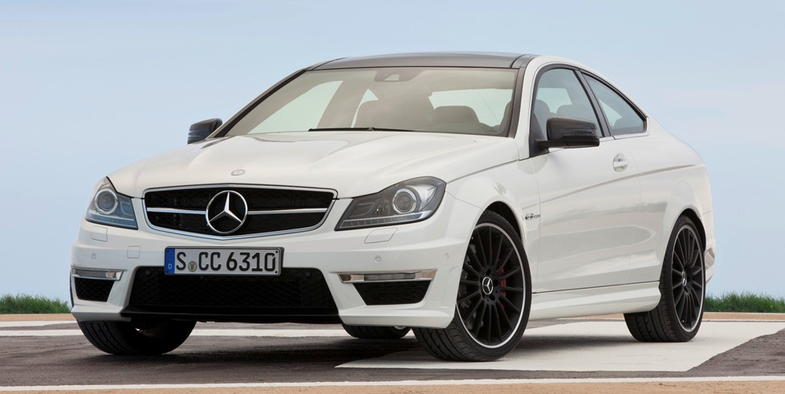

November 11th, 2011

Långa limousiner i all ära. När lyxhotellen i världen ska transportera sina VIP-gäster så är det ofta Mercedes-Benz Viano som gäller.
Läs mer här
November 4th, 2011
Mercedes-Benz Concept A-Klass
premiärvisas på Auto Shanghai
På bilsalongen i Shanghai premiärvisar Mercedes-Benz en formgivningsstudie döpt till Concept A-Klass.
Det är en liten, framhjulsdriven modell med nya designelement – både in och utvändigt.
Läs mer här
November 4th, 2011
Var med om en sak jag knappt trodde var möjlig häromdagen!

Ett höstlöv som lyckades att fastna i min stjärna, där gick förbrukningen upp lite extra…
November 2nd, 2011

”Business-Klass” för under 300 000
• Ny, elegantare kaross och interiör
• Tio nya system för ökad säkerhet
• Effektivare motorer med upp till 31 procent lägre förbrukning
• Senaste generationen telematik med internetanslutning
Läs mer här
November 2nd, 2011

Det har inte gått mer än knappt en månad sedan den nya C-klass Coupé hade premiär, trots detta har AMG redan släppt sin version, C63 AMG med 487 hästkrafter.
En åttacylindrig version med AMG-beteckning betyder 6,2-litersåttan under huven.
C 64 AMG Coupé gör 0-100 km/h på 4,5 sekunder och toppar 250 km/h – BMW M3 Coupé med 420 hästkrafter och 400 newtonmeter – behöver hela 4,6 sekunder till 100km/h.
{kind=link}
{kind=link}
{kind=link}
{kind=link}
{kind=link}
{kind=link}